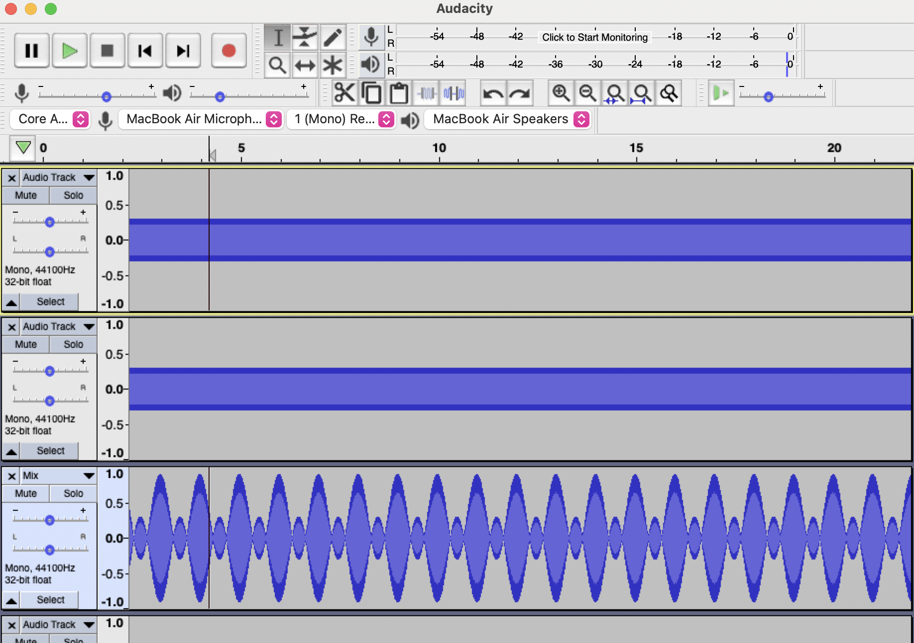

Folio
Table of Contents
Animation / Video
A stop-motion gif with animation elements was made by cutting up a video and inserting images onto it.

Making the animation
The editing software used for the video aspect was iMovie. The editing was started by adding the image into iMovie. A clip was then selected to be edited, and the rest of the video was cut. The final frame of the clip was then screenshotted to be edited in Photopea (a free online Photoshop copy)
In the photo editing software, the skater was isolated by erasing the rest of the image around him. Following this, an outline of his shape was drawn, and this was poorly coloured in.
A blank layer was created, and the previous layer was overlayed. Using this overlay, the next frame of the animation was drawn. This was repeated several more times to produce each frame of the character in the animation. The image shown is every frame overlayed on top of one another.
Each frame was added in to an edited photo of the final frame of the video, where the skater was edited out. Each frame was hidden, and the first frame was shown, and the image was exported. This process was repeated for every frame, and 9 new frames of animation were created and added in to iMovie.
Finally, each frame was added as a clip and it's duration was reduced to the smallest length, 0.1s. As the video was at a higher framerate than 10fps, this was an issue. This was resolved by slowing down the video part of the clip and exporting the total animation, and then finally speeding it up.
Audio
To practise mixing audio in Audacity, I created an audio file using a wide range of different sound effects, and a reversed, sped up and edited version of Erik Satie's Gnossiene No.1
Making the audio file
To first get aquainted with the Audacity software, I learnt how to generate a tone, and how to mix multiple tones together to create a "beat". To start, an empty track was created, and a tone was generated of 201Hz.
Following this, a second tone of 202Hz and a third tone of 203Hz were generated on separate tracks. When played, the audio played a rising and lowering constant tone. Finally, these tracks were mixed onto a third track, to produce a visible waveform of the audio. The final track is shown at the bottom in this image.
After I got enough practice with the Audacity interface, I started a new file and imported several provided sound effects. I practiced moving the separate tracks around and adjusting their volume when other tracks are playing, as well as adding effects. I applied a reverse effect on Satie's Gnossiene No.1, and sped it up as the song was too long. I also adjusted the pitch slightly. I cut out some quiet portions of the song, as I could not sustainably keep speeding it up.
Previous Animation
This animation was created using Adobe Animate for a previous assessment task in May 2021. It was originally designed to be a website header.
Vector Graphics
The image below is a vector image, and is generated using a path consisting of both cubic bezier curves and straight lines, and is able to be infinitely enlarged or zoomed in. The vector image is uses mathematics to generate a path for an image, rather than bitmap images, which are made up of a series of pixels.